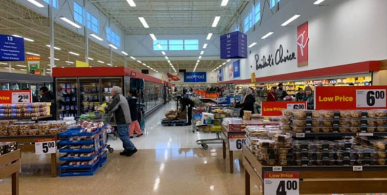

Hi, I’m Stanley, a data analyst with a curious mind and a passion for problem-solving. I’m proficient in identifying connections between data sets and turning challenges into opportunities. My experience in the retail industry handling different small businesses allows me to forecast the needs of any organization by analyzing trends using past values and projecting growth or ways to solve problems.
I’m eager to use my expertise to analyze large data sets to find areas for improvement and give reasonable recommendations on different trends that can guide business decisions and lead to success by identifying the problems and providing solutions.
I'm looking for an opportunity to contribute to the continuous development and growth of any organization through analysis of the data and giving insights that will make a difference and bring success with my solid background in retail industry, handling staff and customers to achieve great results, I will use my problem solving and risk management skills to make positive contributions.

Data collection and analysis for a movie rental company that wants to launch online movie rental service to help the company understand popular movies and consumer choices.
Skills: Database querying, Filtering data with SQL, Cleaning and summarizing data with SQL, Joining Tables in a database with SQL, Writing subqueries, Writing Common Table Expressions (CTE)
Tools: PostgreSQL, Excel, Google Docs, Tableau

The project is to help the company to understand consumer behaviour and motivation in terms of spending and choice of products, it's for the company's marketing purposes.
Skills: Data wrangling, Data merging, Consistency checks, Deriving variables, Grouping data, Aggregating data, Data Visualization, Population flows
Tools: Python, Excel
There is need to prepare for the influenza season and this project helps to understand vulnerable populations and regions for adequate staffing.
Skills: Data wrangling and consistency checks, Geographical Visualizations, Storytelling
Tools: Excel, Tableau

This is a giant in the retail industry and this project is to help use data to find ways to increase sales and maximise profit by understanding factors that concern consumers and regional sales of products.
Skills: Data wrangling, Data merging, Consistency checks, Grouping data, Aggregating data, Data Visualization,
Tools: Python, Excel